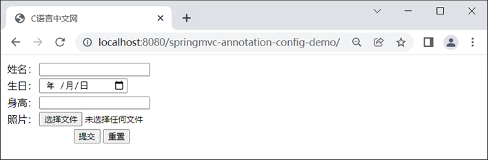
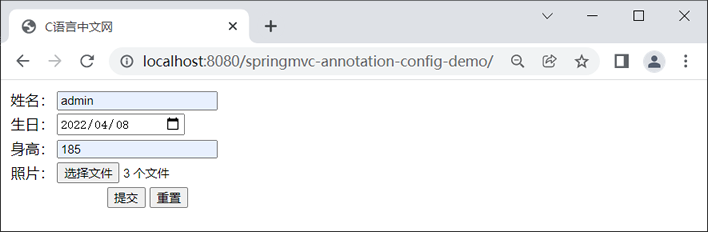
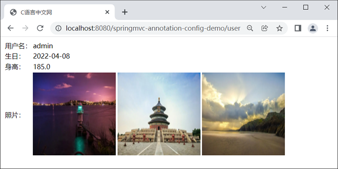
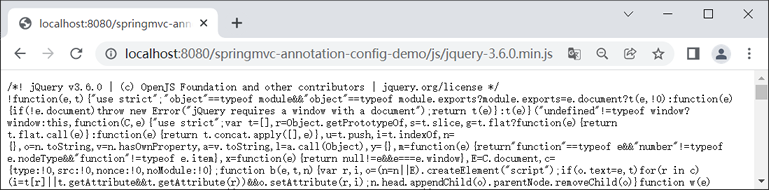

首页 > Spring MVC
Spring MVC注解配置
除了传统的 XML 配置文件外，我们还可以通过“注解+配置类”的方式代替 web.xml 和 Spring MVC 的配置文件，来实现对 Spring MVC 的配置工作。本节，我们来详解介绍下如何通过注解来配置 Spring MVC。
除了 web.xml 外，我们还可以通过初始化类来实现对 DispatcherServlet 的配置。Servlet 容器在启动时，会自动查找类项目路径下实现了 javax.servlet.ServletContainerInitializer 接口的初始化类。若找到，则使用该初始化类代替 web.xml，对 Servlet 容器的上下文进行配置。
Spring 就为 ServletContainerInitializer 接口提供了一个名为 SpringServletContainerInitializer 的实现类，其部分源码如下。
我们看到，SpringServletContainerInitializer 类上使用了一个 @HandlesTypes 注解，该注解能够获取到所有实现了 WebApplicationInitializer 接口的类，然后赋值给 onStartup() 方法的 webAppInitializerClasses 参数。onStartup() 方法会借助 webAppInitializerClasses 参数调用 WebApplicationInitializer 实现类中的方法，以实现对 DispatcherServlet 和 Spring MVC 的配置工作。
Spring 提供了一个 DispatcherServelt 的快速配置类 org.springframework.web.servlet.support.AbstractAnnotationConfigDispatcherServletInitializer，它就是 WebApplicationInitializer 的实现类之一 ，其常用方法如下表。
我们知道，Spring MVC 的配置项繁多，例如组件扫描、视图解析器、拦截器、类型转换器、异常解析器、文件上传解析器等。它们在配置类中的配置方式也不尽相同，大致可以被分为 3 种方式：
以 Thymeleaf 视图解析器为例，由于 Spring MVC 的配置文件 Thymeleaf 视图解析器的配置方式如下。
从上面的配置内容可以看出，Thymeleaf 视图解析器配置起来还是比较麻烦的，共涉及了 3 种类型的 Bean，它们分别是 ThymeleafViewResolver、SpringTemplateEngine 以及 SpringResourceTemplateResolver。其中 SpringResourceTemplateResolver 的 Bean 是以内部 Bean 的形式，通过 <property> 标签注入到 SpringTemplateEngine 类型的 Bean 中的；而 SpringTemplateEngine 的 Bean 又是以内部 Bean 的形式，通过 <property> 标签注入到 ThymeleafViewResolver 类型的 Bean 中的。
基于以上情况，我们可以在 Spring MVC 的配置类中，分别定义 3 个不同的 @Bean 注解修饰的方法，代码如下。
在 Spring MVC 的配置文件中，文件上传解析器的配置形式如下。
在 Spring MVC 的配置类中，我们可以通过 @Bean 注解来对文件上传解析器进行配置，代码如下。
1. 新建一个名为 springmvc-annotation-config-demo 的 Web 工程，将 Spring MVC 和 Commons-upload 的相关依赖引入到该工程中。
2. 在 net.biancheng.c.config 包下，创建一个名为 WebInit 的初始化类代替 web.xml，代码如下。
2. 在 net.biancheng.c.config 包下，新建一个名为 SpringConfig 的配置类代替 Spring 的配置文件，代码如下。
3. 在 net.biancheng.c.config 包下，新建一个名为 WebConfig 的配置类代替 Spring MVC 的配置文件，代码如下。
自此，我们就完成了该项目所有的配置工作，接下来我们就通过一些操作来验证下，这些配置是否生效。
4. 在 net.biancheng.c.entity 包下，新建一个名为 User 的类，代码如下。
5. 在 net.biancheng.c.converter 包下，创建一个名为 MyDateConverter 的自定义类型转换器，代码如下。
6. 在 net.biancheng.c.interceptor 包下，创建一个自定义的拦截器 MyInterceptor，代码如下。
7. 在 net.biancheng.c.controller 包下，创建一个名为 TestController 的控制器类，代码如下。
8. 在 webapp 下新建一个 js 目录，并将 jquery-3.6.0.min.js 引入该目录下。
9. 在 webapp/WEB-INF 下新建一个 templates 目录，并在该目录下创建一个 user.html，代码如下。
10. 在 webapp/WEB-INF/templates 目录下，新建一个 success.html，代码如下。
11. 在 webapp/WEB-INF/templates 目录下，新建一个 error.html，代码如下。
12. 将 springmvc-annotation-config-demo 部署到 Tomcat 服务器中，启动 Tomcat，使用浏览器访问“http://localhost:8080/springmvc-annotation-config-demo/”，结果如下图。
13. 在表单中填写响应的信息，并上传三种图片，如下图。
15. 使用浏览器访问“http://localhost:8080/springmvc-annotation-config-demo/test”，结果如下。
16. 使用浏览器访问“http://localhost:8080/springmvc-annotation-config-demo/testException”，结果如下。
1. 使用初始化类代替 web.xml
我们知道，Spring MVC 本质就是对 Servlet 的进一步封装，其核心组件是一个 DispatcherServelt。DispatcherServelt 是 Spring MVC 中请求最先到达的地方，负责请求在其他各个组件间的传递和加工。在此之前，像 DispatcherServlet 这样的 Servlet，我们都是通过 web.xml 文件来进行配置的。除了 web.xml 外，我们还可以通过初始化类来实现对 DispatcherServlet 的配置。Servlet 容器在启动时，会自动查找类项目路径下实现了 javax.servlet.ServletContainerInitializer 接口的初始化类。若找到，则使用该初始化类代替 web.xml，对 Servlet 容器的上下文进行配置。
Spring 就为 ServletContainerInitializer 接口提供了一个名为 SpringServletContainerInitializer 的实现类，其部分源码如下。
@HandlesTypes({WebApplicationInitializer.class})
public class SpringServletContainerInitializer implements ServletContainerInitializer {
public SpringServletContainerInitializer() {
}
public void onStartup(@Nullable Set<Class<?>> webAppInitializerClasses, ServletContext servletContext) throws ServletException {
……
}
}
我们看到，SpringServletContainerInitializer 类上使用了一个 @HandlesTypes 注解，该注解能够获取到所有实现了 WebApplicationInitializer 接口的类，然后赋值给 onStartup() 方法的 webAppInitializerClasses 参数。onStartup() 方法会借助 webAppInitializerClasses 参数调用 WebApplicationInitializer 实现类中的方法，以实现对 DispatcherServlet 和 Spring MVC 的配置工作。
Spring 提供了一个 DispatcherServelt 的快速配置类 org.springframework.web.servlet.support.AbstractAnnotationConfigDispatcherServletInitializer，它就是 WebApplicationInitializer 的实现类之一 ，其常用方法如下表。
| 方法 | 说明 |
|---|---|
| protected abstract Class<?>[] getRootConfigClasses(); | 该方法用于设置 Spring 的配置类。 |
| protected abstract Class<?>[] getServletConfigClasses(); | 该方法用于设置 Spring MVC 的配置类。 |
| protected abstract String[] getServletMappings(); | 该方法用于指定 DispatcherServelt 的映射规则，即 web.xml 中的 url-pattern。 |
| protected Filter[] getServletFilters() | 该方法用于添加各种过滤器（filter）。 |
如果我们自定义的初始化类继承了 AbstractAnnotationConfigDispatcherServletInitializer 并将其部署到 Servlet 容器中，Servvelt 容器会自动加载这个初始化类，并使用它来完成对 DispatcherServlet 和 Spring MVC 的配置工作，示例代码如下。
package net.biancheng.c.config;
import org.springframework.web.filter.CharacterEncodingFilter;
import org.springframework.web.filter.HiddenHttpMethodFilter;
import org.springframework.web.servlet.support.AbstractAnnotationConfigDispatcherServletInitializer;
import javax.servlet.Filter;
public class WebInit extends AbstractAnnotationConfigDispatcherServletInitializer {
// 设置 Spring 的配置类
@Override
protected Class<?>[] getRootConfigClasses() {
return new Class[]{SpringConfig.class};
}
// 设置 Spring MVC 的配置类
@Override
protected Class<?>[] getServletConfigClasses() {
return new Class[]{WebConfig.class};
}
// 为 DispatcherServlet 指定映射规则，相当于 web.xml 中配置的 url-pattern
@Override
protected String[] getServletMappings() {
return new String[]{"/"};
}
//添加过滤器
@Override
protected Filter[] getServletFilters() {
CharacterEncodingFilter characterEncodingFilter = new CharacterEncodingFilter();
characterEncodingFilter.setEncoding("UTF-8");
characterEncodingFilter.setForceResponseEncoding(true);
HiddenHttpMethodFilter hiddenHttpMethodFilter = new HiddenHttpMethodFilter();
return new Filter[]{hiddenHttpMethodFilter};
}
}
2. 使用配置类代替 Spring 的配置文件
我们还可以使用一个标注了 @Configuration 注解的 Java 类（通常被称为“配置类”），来代替 Spring 的配置文件。
在这个配置类中，我们可以定义多个被 @Bean 注解修饰的方法，这些方法与 Spring 配置文件中 <bean> 标签的作用一样，都是可以将指定的 Java 对象以 Bean 的形式交由 Spring 的 IoC 容器管理。
例如，在 Spring 的 XML 配置文件中定义的一个 Student 类型 Bean，配置形式如下。
<bean id="student" class="net.biancheng.c.entity.Student">
<property name="stuId" value="1001"></property>
<property name="stuName" value="小明"></property>
<property name="age" value="18"></property>
</bean>
上面的 Spring 配置可以通过 SpringConfig 配置类实现，代码如下。
package net.biancheng.c.config;
import net.biancheng.c.entity.Student;
import org.springframework.context.annotation.Bean;
import org.springframework.context.annotation.Configuration;
@Configuration
public class SpringConfig {
//定义 Bean
@Bean
public Student student(){
Student student = new Student();
student.setStuId("1001");
student.setStuName("小明");
student.setAge(18);
return student;
}
}
在配置类中，@Bean 注解修饰的方法说明如下：
- 方法名相当于 <bean> 标签的 id 属性。
- 方法的返回值类型就相当于 <bean> 标签的 class 属性。
- 若该方中存在参数，则该参数对象通常为 Spring 容器中的组件，Spring 会按照类型或参数名称注入该参数对象。
3. 使用配置类代替 Spring MVC 的配置文件
我们还可以使用一个 @Configuration 注解的 Java 类（通常被称为“配置类”），来代替 Spring MVC 的配置文件。我们知道，Spring MVC 的配置项繁多，例如组件扫描、视图解析器、拦截器、类型转换器、异常解析器、文件上传解析器等。它们在配置类中的配置方式也不尽相同，大致可以被分为 3 种方式：
- 实现 WebMvcConfigurer 接口
- 使用 @EnableWebMvc、@ComponentScan 等注解
- 使用 @Bean 注解
实现 WebMvcConfigurer 接口
我们可以通过一个实现了 WebMvcConfigurer 接口的配置类（标注 @Configuration 的类）对 Spring MVC 的部分组件进行配置，例如拦截器、格式化程序、视图控制器等。WebMvcConfigurer 是一个基于 Java 8 的接口，该接口定义了许多与 Spring MVC 相关的方法，其中大部分方法都是 default 类型的且都是空实现。因此我们只需要定义一个配置类实现 WebMvcConfigurer 接口，并重写相应的方法便可以实现对 Spring MVC 的配置。SpringBoot 1.5 及以前是通过继承 WebMvcConfigurerAdapter 抽象类来定制 Spring MVC 配置的，但在 SpringBoot 2.0 后，WebMvcConfigurerAdapter 抽象类就被弃用了，改为实现 WebMvcConfigurer 接口来定制 Spring MvVC 配置。
| 方法 | 说明 |
|---|---|
| default void configureDefaultServletHandling(DefaultServletHandlerConfigurer configurer) {} | 将静态文件交给 Servlet 容器（Tomcat）内置的默认 Servlet 处理。 |
| default void addInterceptors(InterceptorRegistry registry) {} | 添加 Spring MVC 拦截器，对请求进行拦截处理。 |
| default void addResourceHandlers(ResourceHandlerRegistry registry) {} |
添加或修改静态资源（例如图片，js，css 等）映射； Spring Boot 默认设置的静态资源文件夹就是通过重写该方法设置的。 |
| default void addViewControllers(ViewControllerRegistry registry) {} | 主要用于实现无业务逻辑跳转，例如主页跳转，简单的请求重定向，错误页跳转等 |
| default void configureMessageConverters(List<HttpMessageConverter<?>> converters) {} | 用于配置默认的消息转换器（转换 HTTP 请求和响应）。 |
| default void extendMessageConverters(List<HttpMessageConverter<?>> converters) {} |
直接添加消息转换器，会关闭默认的消息转换器列表； 实现该方法即可在不关闭默认转换器的起提下，新增一个自定义转换器。 |
| default void configureHandlerExceptionResolvers(List<HandlerExceptionResolver> resolvers) {} | 配置异常解析器。 |
使用 @EnableWebMvc、@ComponentScan 等注解
我们还可以在配置类中通过 @EnableWebMvc、@ComponentScan 等注解实现对 Spring MVC 的配置。1) 使用 @ComponentScan 注解开启组件扫描
我们知道，在 Spring 和 Spring MVC 的配置文件中，开启组件扫描功能的配置内容如下。<!--开启组件扫描--> <context:component-scan base-package="net.biancheng.c"></context:component-scan>
使用配置类开启组件扫描功能的代码如下。
@Configuration
//扫描组件
@ComponentScan("net.biancheng.c")
public class WebConfig implements WebMvcConfigurer {
}
2) 使用 @EnableWebMvc 注解开启 Spring MVC 注解驱动
我们可以在 Spring MVC 配置类上使用 @EnableWebMvc 注解代替 <mvc:annotation-driven /> 标签，开启 Spring MVC 的注解驱动，示例代码如下。
@Configuration
//开启组件扫描
@ComponentScan("net.biancheng.c")
//开启 Spring MVC注解驱动
@EnableWebMvc
public class WebConfig implements WebMvcConfigurer {
}
使用 @Bean 注解
我们还可以在配置类中通过 @Bean 注解对 Spring MVC 组件进行配置。1) 使用 @Bean 注解配置 Thymeleaf 视图解析器
在 Spring MVC 的配置类中，使用 @Bean 注解可以实现对视图解析器的配置。以 Thymeleaf 视图解析器为例，由于 Spring MVC 的配置文件 Thymeleaf 视图解析器的配置方式如下。
<!-- 配置 Thymeleaf 视图解析器 -->
<bean id="viewResolver"
class="org.thymeleaf.spring5.view.ThymeleafViewResolver">
<property name="order" value="1"/>
<property name="characterEncoding" value="UTF-8"/>
<property name="templateEngine">
<bean class="org.thymeleaf.spring5.SpringTemplateEngine">
<property name="templateResolver">
<bean class="org.thymeleaf.spring5.templateresolver.SpringResourceTemplateResolver">
<!-- 视图前缀 -->
<property name="prefix" value="/WEB-INF/templates/"/>
<!-- 视图后缀 -->
<property name="suffix" value=".html"/>
<property name="templateMode" value="HTML5"/>
<property name="characterEncoding" value="UTF-8"/>
</bean>
</property>
</bean>
</property>
</bean>
从上面的配置内容可以看出，Thymeleaf 视图解析器配置起来还是比较麻烦的，共涉及了 3 种类型的 Bean，它们分别是 ThymeleafViewResolver、SpringTemplateEngine 以及 SpringResourceTemplateResolver。其中 SpringResourceTemplateResolver 的 Bean 是以内部 Bean 的形式，通过 <property> 标签注入到 SpringTemplateEngine 类型的 Bean 中的；而 SpringTemplateEngine 的 Bean 又是以内部 Bean 的形式，通过 <property> 标签注入到 ThymeleafViewResolver 类型的 Bean 中的。
基于以上情况，我们可以在 Spring MVC 的配置类中，分别定义 3 个不同的 @Bean 注解修饰的方法，代码如下。
@Configuration
//扫描组件
@ComponentScan("net.biancheng.c")
//开启MVC注解驱动
@EnableWebMvc
public class WebConfig implements WebMvcConfigurer {
//配置生成模板解析器
@Bean
public ITemplateResolver templateResolver() {
WebApplicationContext webApplicationContext =
ContextLoader.getCurrentWebApplicationContext();
// ServletContextTemplateResolver需要一个ServletContext作为构造参数，可通过 WebApplicationContext
ServletContextTemplateResolver templateResolver = new ServletContextTemplateResolver(webApplicationContext.getServletContext());
templateResolver.setPrefix("/WEB-INF/templates/");
templateResolver.setSuffix(".html");
templateResolver.setCharacterEncoding("UTF-8");
templateResolver.setTemplateMode(TemplateMode.HTML);
return templateResolver;
}
//生成模板引擎并为模板引擎注入模板解析器
@Bean
public SpringTemplateEngine templateEngine(ITemplateResolver templateResolver) {
SpringTemplateEngine templateEngine = new SpringTemplateEngine();
templateEngine.setTemplateResolver(templateResolver);
return templateEngine;
}
//生成视图解析器并为解析器注入模板引擎
@Bean
public ViewResolver viewResolver(SpringTemplateEngine templateEngine) {
ThymeleafViewResolver viewResolver = new ThymeleafViewResolver();
viewResolver.setCharacterEncoding("UTF-8");
viewResolver.setTemplateEngine(templateEngine);
return viewResolver;
}
}
2) 使用 @Bean 注解配置文件上传解析器
我们知道，想要实现文件上传功能，就需要对 Spring MVC 的文件上传解析器进行配置。在 Spring MVC 的配置文件中，文件上传解析器的配置形式如下。
<!--配置文件上传解析器-->
<bean id="multipartResolver" class="org.springframework.web.multipart.commons.CommonsMultipartResolver">
<!--设置上传文件的默认编码格式-->
<property name="defaultEncoding" value="UTF-8"></property>
<!--设置允许上传的最大长度-->
<property name="maxUploadSize" value="10485760"></property>
</bean
在 Spring MVC 的配置类中，我们可以通过 @Bean 注解来对文件上传解析器进行配置，代码如下。
@Configuration
//扫描组件
@ComponentScan("net.biancheng.c")
//开启MVC注解驱动
@EnableWebMvc
public class WebConfig implements WebMvcConfigurer {
//配置文件上传解析器
@Bean
public CommonsMultipartResolver multipartResolver() {
CommonsMultipartResolver commonsMultipartResolver = new CommonsMultipartResolver();
commonsMultipartResolver.setDefaultEncoding("UTF-8");
commonsMultipartResolver.setMaxUploadSize(1024*1024*10);
return commonsMultipartResolver;
}
}
示例
下面，我们通过一个实例，来演示下如何通过全注解方式完成对 Spring MVC 工程的配置，具体步骤如下。1. 新建一个名为 springmvc-annotation-config-demo 的 Web 工程，将 Spring MVC 和 Commons-upload 的相关依赖引入到该工程中。
2. 在 net.biancheng.c.config 包下，创建一个名为 WebInit 的初始化类代替 web.xml，代码如下。
package net.biancheng.c.config;
import org.springframework.web.filter.CharacterEncodingFilter;
import org.springframework.web.filter.HiddenHttpMethodFilter;
import org.springframework.web.servlet.support.AbstractAnnotationConfigDispatcherServletInitializer;
import javax.servlet.Filter;
//初始化类，代替 web.xml
public class WebInit extends AbstractAnnotationConfigDispatcherServletInitializer {
//设置 Spring 的配置类
@Override
protected Class<?>[] getRootConfigClasses() {
return new Class[]{SpringConfig.class};
}
//设置 Spring MVC 的配置类
@Override
protected Class<?>[] getServletConfigClasses() {
return new Class[]{WebConfig.class};
}
//为 DispatcherServlet 指定映射规则，相当于 web.xml 中配置的 url-pattern
@Override
protected String[] getServletMappings() {
return new String[]{"/"};
}
//添加过滤器
@Override
protected Filter[] getServletFilters() {
CharacterEncodingFilter characterEncodingFilter = new CharacterEncodingFilter();
characterEncodingFilter.setEncoding("UTF-8");
characterEncodingFilter.setForceResponseEncoding(true);
HiddenHttpMethodFilter hiddenHttpMethodFilter = new HiddenHttpMethodFilter();
return new Filter[]{characterEncodingFilter, hiddenHttpMethodFilter};
}
}
2. 在 net.biancheng.c.config 包下，新建一个名为 SpringConfig 的配置类代替 Spring 的配置文件，代码如下。
package net.biancheng.c.config;
import net.biancheng.c.entity.User;
import org.springframework.context.annotation.Bean;
import org.springframework.context.annotation.Configuration;
import java.util.Date;
//创建一个配置类，代替 Spring 的配置文件
@Configuration
public class SpringConfig {
//定义 User 类型的 Bean，交由 Spring 容器管理
@Bean
public User User(){
User user = new User();
user.setUserName("小明");
user.setBirth(new Date());
user.setHeight(180.0);
return user;
}
}
3. 在 net.biancheng.c.config 包下，新建一个名为 WebConfig 的配置类代替 Spring MVC 的配置文件，代码如下。
package net.biancheng.c.config;
import net.biancheng.c.converter.MyDateConverter;
import net.biancheng.c.interceptor.MyInterceptor;
import org.springframework.context.annotation.Bean;
import org.springframework.context.annotation.ComponentScan;
import org.springframework.context.annotation.Configuration;
import org.springframework.format.FormatterRegistry;
import org.springframework.web.context.ContextLoader;
import org.springframework.web.context.WebApplicationContext;
import org.springframework.web.multipart.commons.CommonsMultipartResolver;
import org.springframework.web.servlet.HandlerExceptionResolver;
import org.springframework.web.servlet.ViewResolver;
import org.springframework.web.servlet.config.annotation.*;
import org.springframework.web.servlet.handler.SimpleMappingExceptionResolver;
import org.thymeleaf.spring5.SpringTemplateEngine;
import org.thymeleaf.spring5.view.ThymeleafViewResolver;
import org.thymeleaf.templatemode.TemplateMode;
import org.thymeleaf.templateresolver.ITemplateResolver;
import org.thymeleaf.templateresolver.ServletContextTemplateResolver;
import java.util.List;
import java.util.Properties;
//配置类代替 Spring MVC 的配置文件
@Configuration
//扫描组件
@ComponentScan("net.biancheng.c")
//开启MVC注解驱动
@EnableWebMvc
public class WebConfig implements WebMvcConfigurer {
//使用默认的servlet处理静态资源
@Override
public void configureDefaultServletHandling(DefaultServletHandlerConfigurer configurer) {
configurer.enable();
}
//配置文件上传解析器
@Bean
public CommonsMultipartResolver multipartResolver() {
CommonsMultipartResolver commonsMultipartResolver = new CommonsMultipartResolver();
commonsMultipartResolver.setDefaultEncoding("UTF-8");
commonsMultipartResolver.setMaxUploadSize(1024 * 1024 * 10);
return commonsMultipartResolver;
}
//配置拦截器
@Override
public void addInterceptors(InterceptorRegistry registry) {
MyInterceptor myInterceptor = new MyInterceptor();
registry.addInterceptor(myInterceptor).addPathPatterns("/**").excludePathPatterns("/");
}
//配置视图控制
@Override
public void addViewControllers(ViewControllerRegistry registry) {
registry.addViewController("/").setViewName("user");
}
//配置异常映射
@Override
public void configureHandlerExceptionResolvers(List<HandlerExceptionResolver> resolvers) {
SimpleMappingExceptionResolver exceptionResolver = new
SimpleMappingExceptionResolver();
Properties prop = new Properties();
prop.setProperty("java.lang.Exception", "error");
//设置异常映射
exceptionResolver.setExceptionMappings(prop);
//设置共享异常信息的键
exceptionResolver.setExceptionAttribute("ex");
resolvers.add(exceptionResolver);
}
//配置生成模板解析器
@Bean
public ITemplateResolver templateResolver() {
WebApplicationContext webApplicationContext =
ContextLoader.getCurrentWebApplicationContext();
// ServletContextTemplateResolver需要一个ServletContext作为构造参数，可通过 WebApplicationContext
ServletContextTemplateResolver templateResolver = new ServletContextTemplateResolver(webApplicationContext.getServletContext());
templateResolver.setPrefix("/WEB-INF/templates/");
templateResolver.setSuffix(".html");
templateResolver.setCharacterEncoding("UTF-8");
templateResolver.setTemplateMode(TemplateMode.HTML);
return templateResolver;
}
//生成模板引擎并为模板引擎注入模板解析器
@Bean
public SpringTemplateEngine templateEngine(ITemplateResolver templateResolver) {
SpringTemplateEngine templateEngine = new SpringTemplateEngine();
templateEngine.setTemplateResolver(templateResolver);
return templateEngine;
}
//生成视图解析器并未解析器注入模板引擎
@Bean
public ViewResolver viewResolver(SpringTemplateEngine templateEngine) {
ThymeleafViewResolver viewResolver = new ThymeleafViewResolver();
viewResolver.setCharacterEncoding("UTF-8");
viewResolver.setTemplateEngine(templateEngine);
return viewResolver;
}
//添加类型转换器和格式化器
@Override
public void addFormatters(FormatterRegistry registry) {
MyDateConverter myDateConverter = new MyDateConverter();
registry.addConverter(myDateConverter);
}
}
自此，我们就完成了该项目所有的配置工作，接下来我们就通过一些操作来验证下，这些配置是否生效。
4. 在 net.biancheng.c.entity 包下，新建一个名为 User 的类，代码如下。
package net.biancheng.c.entity;
import org.springframework.web.multipart.MultipartFile;
import java.util.Date;
import java.util.List;
/**
* 实体类 User
*/
public class User {
private String userName;
private Date birth;
private Double height;
private List<MultipartFile> photos;
public String getUserName() {
return userName;
}
public void setUserName(String userName) {
this.userName = userName;
}
public Date getBirth() {
return birth;
}
public void setBirth(Date birth) {
this.birth = birth;
}
public Double getHeight() {
return height;
}
public void setHeight(Double height) {
this.height = height;
}
public List<MultipartFile> getPhotos() {
return photos;
}
public void setPhotos(List<MultipartFile> photos) {
this.photos = photos;
}
@Override
public String toString() {
return "User{" +
"userName='" + userName + '\'' +
", birth=" + birth +
", height=" + height +
", photos=" + photos +
'}';
}
}
5. 在 net.biancheng.c.converter 包下，创建一个名为 MyDateConverter 的自定义类型转换器，代码如下。
package net.biancheng.c.converter;
import org.springframework.core.convert.converter.Converter;
import java.text.ParseException;
import java.text.SimpleDateFormat;
import java.util.Date;
/**
* 自定义日期转换器
*/
public class MyDateConverter implements Converter<String, Date> {
private String datePatten = "yyyy-MM-dd";
@Override
public Date convert(String source) {
System.out.println("自定义的类型转换器生效；前端页面传递过来的时间为：" + source);
SimpleDateFormat simpleDateFormat = new SimpleDateFormat(datePatten);
try {
return simpleDateFormat.parse(source);
} catch (ParseException e) {
throw new IllegalArgumentException("无效的日期格式，请使用正确的日期格式" + datePatten);
}
}
}
6. 在 net.biancheng.c.interceptor 包下，创建一个自定义的拦截器 MyInterceptor，代码如下。
package net.biancheng.c.interceptor;
import org.springframework.web.servlet.HandlerInterceptor;
import org.springframework.web.servlet.ModelAndView;
import javax.servlet.http.HttpServletRequest;
import javax.servlet.http.HttpServletResponse;
//自定义拦截器
public class MyInterceptor implements HandlerInterceptor {
@Override
public boolean preHandle(HttpServletRequest request, HttpServletResponse response, Object handler) throws Exception {
System.out.println("拦截器 MyInterceptor 成功拦截请求：preHandle 执行");
return true;
}
@Override
public void postHandle(HttpServletRequest request, HttpServletResponse response, Object handler, ModelAndView modelAndView) throws Exception {
System.out.println("拦截器 MyInterceptor 成功拦截请求：postHandle 执行");
}
@Override
public void afterCompletion(HttpServletRequest request, HttpServletResponse response, Object handler, Exception ex) throws Exception {
System.out.println("拦截器 MyInterceptor 成功拦截请求：afterCompletion 执行");
}
}
7. 在 net.biancheng.c.controller 包下，创建一个名为 TestController 的控制器类，代码如下。
package net.biancheng.c.controller;
import net.biancheng.c.entity.User;
import org.springframework.stereotype.Controller;
import org.springframework.ui.Model;
import org.springframework.web.bind.annotation.GetMapping;
import org.springframework.web.bind.annotation.RequestMapping;
import org.springframework.web.bind.annotation.RequestMethod;
import org.springframework.web.bind.annotation.ResponseBody;
import org.springframework.web.multipart.MultipartFile;
import javax.annotation.Resource;
import javax.servlet.http.HttpServletRequest;
import java.io.File;
import java.util.ArrayList;
import java.util.List;
import java.util.UUID;
@Controller
public class TestController {
@Resource
private User user;
/**
* 测试 Spring 配置是否生效
*
* @return
*/
@ResponseBody
@GetMapping("/test")
public User get() {
return user;
}
/**
* 测试异常映射是否生效
*
* @return
*/
@GetMapping("/testException")
public User get2() {
int a = 10 / 0;
return user;
}
@RequestMapping(value = "/user", method = RequestMethod.POST)
public String login(User user, HttpServletRequest request, Model model) {
List<String> newFileNameList = new ArrayList<>();
List<MultipartFile> photos = user.getPhotos();
for (MultipartFile photo : photos) {
String realPath = request.getServletContext().getRealPath("/upload/");
System.out.println(realPath);
File fileDir = new File(realPath);
if (!fileDir.exists()) {
fileDir.mkdir();
}
String filename = photo.getOriginalFilename();
System.err.println("正在上传的图片为：" + filename);
String newFileName = UUID.randomUUID() + filename;
try {
//将文件保存指定目录
photo.transferTo(new File(realPath + newFileName));
} catch (Exception e) {
e.printStackTrace();
}
newFileNameList.add(newFileName);
}
System.out.println(user);
model.addAttribute("type", "success");
model.addAttribute("user", user);
model.addAttribute("filePath", "/upload/");
model.addAttribute("fileNameList", newFileNameList);
return "success";
}
}
8. 在 webapp 下新建一个 js 目录，并将 jquery-3.6.0.min.js 引入该目录下。
9. 在 webapp/WEB-INF 下新建一个 templates 目录，并在该目录下创建一个 user.html，代码如下。
<!DOCTYPE html>
<html lang="en" xmlns:th="http://www.thymeleaf.org">
<head>
<meta charset="UTF-8">
<title>C语言中文网</title>
</head>
<body>
<form th:action="@{/user}" method="post" enctype="multipart/form-data">
<table>
<tr>
<td>姓名：</td>
<td><input type="text" name="userName" required><br></td>
</tr>
<tr>
<td>生日：</td>
<td><input type="date" name="birth" required><br></td>
</tr>
<tr>
<td>身高：</td>
<td><input type="text" name="height" required><br></td>
</tr>
<tr>
<td>照片：</td>
<td><input type="file" name="photos" multiple="multiple" required><br></td>
</tr>
<tr>
<td colspan="2" align="center">
<input type="submit" value="提交">
<input type="reset" value="重置">
</td>
</tr>
</table>
</form>
</body>
</html>
10. 在 webapp/WEB-INF/templates 目录下，新建一个 success.html，代码如下。
<!DOCTYPE html>
<html lang="en" xmlns:th="http://www.thymeleaf.org">
<head>
<meta charset="UTF-8">
<title>C语言中文网</title>
</head>
<body>
<table>
<tr>
<td>用户名：</td>
<td th:text="${user.getUserName()}"></td>
</tr>
<tr>
<td>生日：</td>
<td th:text="${#dates.format(user.getBirth(),'yyyy-MM-dd')}"></td>
</tr>
<tr>
<td>身高：</td>
<td th:text="${user.getHeight()}"></td>
</tr>
<tr>
<td>照片：</td>
<td th:each="p:${fileNameList}">
<img th:src="${#servletContext.getContextPath()}+${filePath}+${p}" width='200px' height='200px'/><br>
</td>
</tr>
</table>
</body>
</html>
11. 在 webapp/WEB-INF/templates 目录下，新建一个 error.html，代码如下。
<!DOCTYPE html>
<html lang="en" xmlns:th="http://www.thymeleaf.org">
<head>
<meta charset="UTF-8">
<title>Title</title>
</head>
<body>
<h1>程序发生异常！</h1>
<h1 th:text="${ex}"></h1>
</body>
</html>
12. 将 springmvc-annotation-config-demo 部署到 Tomcat 服务器中，启动 Tomcat，使用浏览器访问“http://localhost:8080/springmvc-annotation-config-demo/”，结果如下图。

图1：注解配置-1
图1：注解配置-1
13. 在表单中填写响应的信息，并上传三种图片，如下图。

图2：注解配置-2
14. 点击下方的“提交”按钮，结果如下图。图2：注解配置-2

图3：注解配置-3
图3：注解配置-3
15. 使用浏览器访问“http://localhost:8080/springmvc-annotation-config-demo/test”，结果如下。
{"userName":"小明","birth":1649402504930,"height":180.0,"photos":null}
16. 使用浏览器访问“http://localhost:8080/springmvc-annotation-config-demo/testException”，结果如下。
程序发生异常！ java.lang.ArithmeticException: / by zero17. 使用浏览器访问“http://localhost:8080/springmvc-annotation-config-demo/js/jquery-3.6.0.min.js”，对静态文件 jquery-3.6.0.min.js 进行访问，结果如下。

图4：访问静态文件
图4：访问静态文件
关注公众号「站长严长生」，在手机上阅读所有教程，随时随地都能学习。内含一款搜索神器，免费下载全网书籍和视频。

微信扫码关注公众号